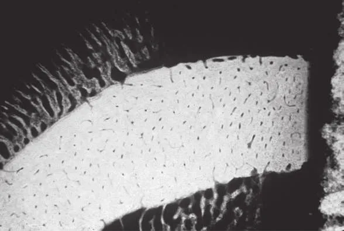
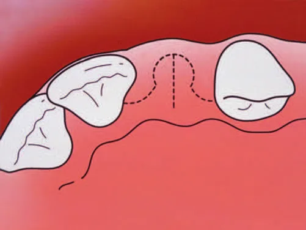

نسخه استخراجشده؛ ترجمه یا تأیید علمی انجام نشده است. وضعیت: captured
گرما عارضهای است که در لحظه دیده نمیشود؛ نتیجهاش هفتهها بعد بهصورت شکست استئواینتگریشن ظاهر میشود. به همین دلیل باید با قاعده از آن جلوگیری کرد، نه با مشاهده.
سه لایهی خنکسازی: در کنار ایریگیشن خارجی از متههای جراحی، میتوان خنکسازی را با ایریگیشن داخلی (از میان خود فرز) یا با ایریگیشن مکمل با سرنگ افزایش داد. قاعدهی کلی: مقدار فراوان ایریگیشن حین آمادهسازی استئوتومی برای پرهیز از داغ شدن استخوان.
و یک هشدار دربارهی ابزار مدرن: هنگام استفاده از گایدهای جراحی باید احتیاط کرد، چون مقدار کمی ایریگیشن وارد محل استئوتومی میشود و داغ شدن استخوان مشکلی شایع است.
راهحل ساده و عملی است: گاید باید طوری اصلاح شود که سطح فاسیال آن باز شود تا بتوان ایریگیشن مکمل را وارد کرد.
یعنی همان ابزاری که برای دقت اضافه کردهای، اگر اصلاح نشود یک ریسک تازه میسازد. این الگو را در کل این ماژول خواهی دید.
هندپیس الکتریکی. هندپیسهای الکتریکی — رایجترین نوع در ایمپلنتولوژی امروز — تمایل به داغ شدن دارند و همین میتواند به عوارض قابلتوجه بافت نرم بینجامد. یعنی سوختگی بافت نرم، نه فقط آسیب استخوانی.
برخلاف هندپیس بادی که با فشار کار از بازده میافتد، هندپیس الکتریکی بازدهاش را حفظ میکند و گرمای بیشتری میسازد؛ بدنهی عایقش این گرما را از تو پنهان میکند و بیمارِ بیحس هم متوجه نمیشود. پس مدام داغ شدن موتور را بسنج و میان کار مکث کن.
سرعت و تیزی مته در استخوان متراکم. سرعت مته در استخوان سخت و متراکم باید حدود ۲۰۰۰ تا ۲۵۰۰ دور بر دقیقه باشد؛ در این سرعتها آمادهسازی با متهی تیز آسیب استخوانی کمتری میسازد، ولی متهی کُند گرما را بالا میبرد و ممکن است استئواینتگریشن رخ ندهد — متهها را حدود هر ۲۰ تا ۳۰ بار اتوکلاو عوض کن.
و یک ابزار پیشگیری ساده: میتوان از استاپر مته (drill stop) استفاده کرد تا از آمادهسازی بیشازحد محل جلوگیری شود.

یکی از مفیدترین عددهای جراحی ایمپلنت چیزی است که معمولاً به آن فکر نمیشود: هر مته دقیقاً چقدر استخوان برمیدارد؟
• متهی ۲٫۵ میلیمتری پس از متهی ۲ میلیمتری تنها ۰٫۲۵ میلیمتر از هر طرف استئوتومی برمیدارد.
• متهی ۳ میلیمتری پس از متهی ۲ میلیمتری، ۰٫۵ میلیمتر از هر طرف برمیدارد.
چرا مهم است؟ چون گرمای تولیدشده مستقیماً به مقدار استخوانی بستگی دارد که هر مته برمیدارد. افزایش تدریجی قطر (با متهی میانی) آمادهسازی را سریعتر و با فشار و گرمای کمتر پیش میبرد، حس لمسی دستت را نگه میدارد تا زاویهی مته ناخواسته عوض نشود و استئوتومی بیضی نشود، و هر مته را هم دیرتر کُند میکند.
متهی کرستال در استخوان نرم — یک قاعدهی قطعی: در استخوان کمتراکم (بدون استخوان کورتیکال کافی) هرگز نباید از متهی کرستال استفاده کرد، چون به از دست رفتن تثبیت اولیه میانجامد.
منطقش را ببین: متهی کرستال دقیقاً همان لایهی کورتیکالی را برمیدارد که در استخوان نرم، تنها منبع پایداری است.
درج ایمپلنت در استخوان نرم (حدود D4). ایمپلنت باید با هندپیس کمسرعت و پرگشتاور اجازهی خودتراشی (self-tap) پیدا کند. و یک هشدار روشن: آچار دستی کنترااندیکه است، چون استئوتومی را پهن — و بیضی — میکند و میتواند به نبود تثبیت صلب ایمپلنت بینجامد.
و طرف دیگر ماجرا — استخوان بیشازحد متراکم. برای کاهش نکروز فشاری در استخوان بسیار متراکم (حدود D1)، ایمپلنت پس از درج ۱ میلیمتر باز گردانده میشود (unthread).
پس دو سر طیف، دو خطای متفاوت دارند: در استخوان نرم کم برمیداری تا گیر بماند؛ در استخوان سخت فشار را آزاد میکنی تا نکروز نشود.
تست گشتاور معکوس (RTT). این تست که برای تأیید تثبیت صلب به کار میرود، شامل اعمال گشتاور معکوس (پادساعتگرد) تعریفشده بر ایمپلنت — از راه مانت — در جراحی مرحلهی دوم است.
ولی توصیه این است که از RTT برای ارزیابی استئواینتگریشن استفاده نکنی: هنگام باز کردن مرحلهی دوم، استخوان فقط حدود ۶۰ درصد مینرالیزه و هنوز بیشتر نابالغ (woven) است؛ تست همان رابط ضعیف را در معرض شکست میگذارد و ممکن است ایمپلنتی را که استئواینتگره میشد از دست بدهی. رادیوگرافی و آزمون دستی لقی همین کار را بیآنکه ایمپلنت را به خطر بیندازند انجام میدهند.
و یک قاعدهی ایمنی آناتومیک که در همین مرحله اعمال میشود: پس از شناسایی ساختارهای حیاتی، ایمپلنت باید بیش از ۲ میلیمتر از کانال آلوئولار تحتانی یا فورامن منتال فاصله داشته باشد.
